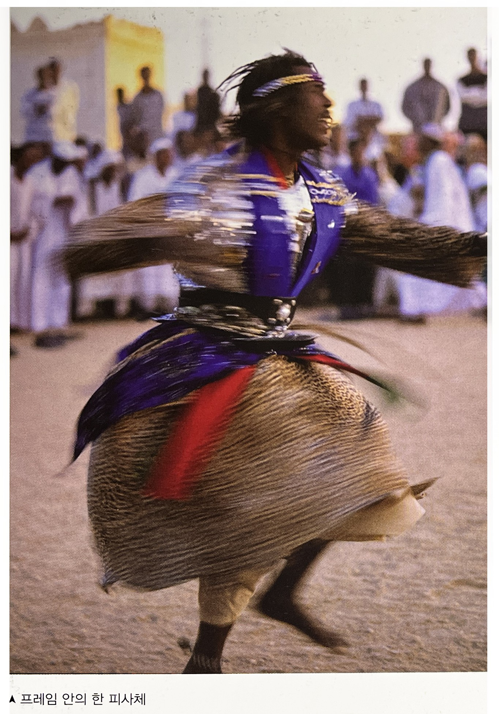
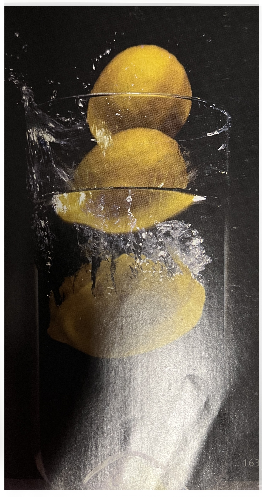

프로세스는 사진을 만드는 과정에서 발생하는 일이다.
카메라가 할 수 있는 일과 카메라를 다루는 방법은 긴밀하게 연결되어 있다.
"나는 내가 본 것을 촬영한 것이 아니라 카메라가 본 것을 내가 촬영했다
나는 거의 방해하지 않았으며, 렌즈는 나의 눈이 관찰한 일이 없는 해부학적
이미지들과 형태들을 만들어 냈다." 빌 브란트의 말이다
❍ 움직임 표현 방법 1- 피사체 움직임 흐림[p161]
✓ 선명한 정지동작부터 알아볼 수 없을 정도로 흐려짐.
✓ 피사체의 작은 영역이 흐려지며 프레임 대부분이 흐려짐.
✓ 저속셔터로 후막동조 플래시를 사용하면 흐려진 동작에
선명한 마지막 순간을 더해 준다.

➪ 프레임안의 한 피사체
❍ 움직임 표현 방법 2- 카메라 움직인 흐림[p162]
✓ 배경은 흐려지고 피사체를 선명하게 하기 위해서 패닝하는 것.
✓ 이미지 전체를 흐리게 하기 위해서 카메라를 임의로 움직이는 것.
✓ 다양한 z축 흐림 : 주밍하기, 카메라 들고 걷기.
결과는 방사선 흐림 현상이며, 중앙에서 바깥쪽으로 방사 흐림이 생긴다.
✓ 카메라를 움직이며 후막동조 플래시를 사용한다.
❍ 움직임 표현 방법 3- 카메라 움직인 흐림[p163]
➪ 다중노출
✓ 카메라로.
✓ 연속사진을 중첩시켜서.

➪ 연속사진을 중첩 시킨것. 마스킹 사용
[참고문헌]
[1] 사진가 마인드, ‘마이클 프리맨’지음, 김문호 옮김, 비즈앤비즈, 2011.10.25.
[2] 원하는 사진을 어떻게 찍는가, 김성민, 소울메이트, 2015. 2. 9.
....
....
....
....
....